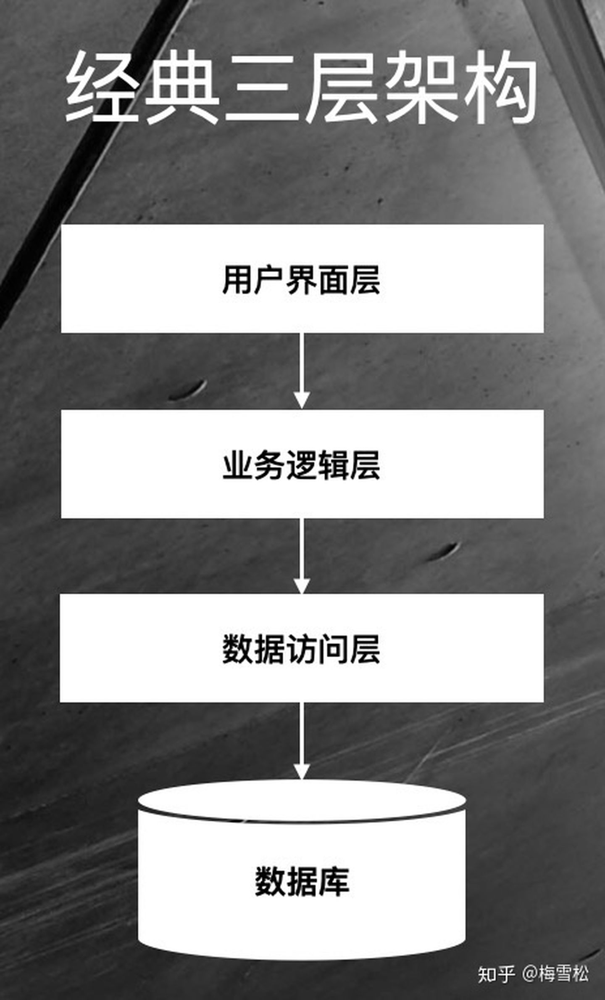
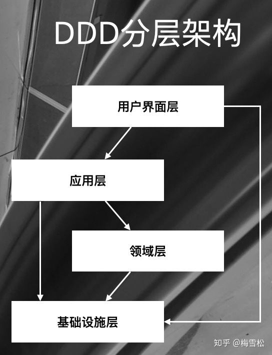
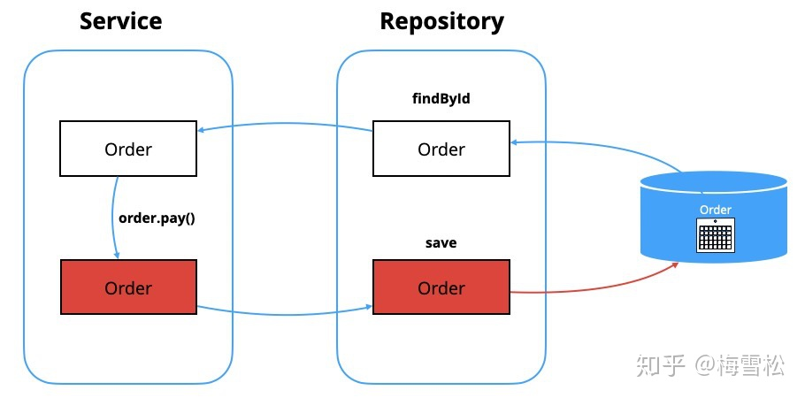
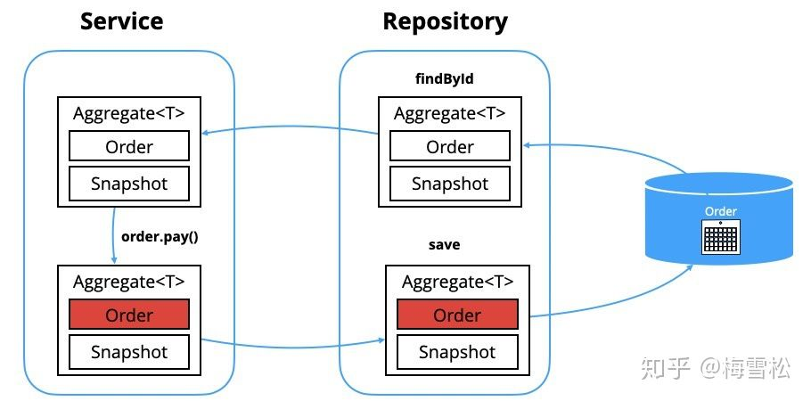

说到DDD难，我觉得主要是两点：建模难、代码落地难。前者需要业务熟、功力深，难以快速提升；后者难在缺乏简单易行的可参考的代码结构，一旦有了这样的参考结构，就可以快速大幅降低DDD的实践难度。本文从后者的诸多难点中选择一个最常见的问题进行探讨：如何优雅地实现聚合的持久化？
持久化什么，谁来做持久化?
我们先来看一下，以前我们是怎么做持久化的。下图是一个非常典型的三层架构，业务逻辑层相当于Service层，完成业务处理。持久化主要通过数据访问层完成，这一层会有ORM、DAO等。这时候的实体类是一个JavaBean, 没有行为，它是一个贫血模型。我们会在实体类上加上注解，用来做数据库的持久化。这是非常典型的以数据为中心的编程方式，可能大家开始学编程时就是这么做的，非常成熟，没有什么挑战。

但系统复杂度达到一定程度时，以数据为中心的编程方式就会导致业务逻辑散布在各个地方，系统变得很难维护，响应力越来越低。因此Eric提出了领域驱动设计方法。其中一个重要的手段就是分离关注点，将技术复杂度与业务复杂度分离。也就是说，业务代码应该只关注业务逻辑的实现，不需要关心对象如何被持久化到数据库。持久化属于技术实现，与业务无关，它不需要知道业务是如何处理的。因此Eric提出了DDD的分层架构，如下图。其中一个主要的区别在于，我们将业务逻辑从Service中移出来，放在了Domain model中，变成了充血模型，封装在聚合中，应用层Service只是起协调作用。同时，将数据访问层不见了，都放在基础设施层了。

那么这时候我们聊持久化的时候，我们持久化的是什么，谁来做持久化？Eric帮我们给出了定义。我们持久化的是聚合。
聚合(Aggregate)就是一组相关对象的集合，我们把它作为数据修改的单元。每个聚合都有一个根(Root)和一个边界( Boundary) ——Eric Evans
为什么数据修改的单元是聚合而不是实体或者其它东西呢？因为聚合封装了业务规则，也就是“不变性(Invariants)”，因此我们要把它作为一个整体而不是拆开来，以确保业务规则不被破坏。所以我们要以聚合为单元进行持久化。谁来做这个持久化的工作呢？资源库Repository。以订单为例，这是一个典型的Repository接口定义。
public interface OrderRepository {
public Order findById(String id);
public void save(Order order);
public void remove(Order order);
}
领域模型和持久化模型要分离吗？
当我们做持久化的时候，问题来了，我们需要单独的持久化模型吗？或者说，领域模型和持久化模型要分离吗？当你做持久化时，是直接拿领域模型做持久化，还是转换成持久化模型后做数据库保存。我遇到很多团队在这个问题上有分歧。有的说我这个系统的领域模型和持久化模型基本是一样的，没必要分离。另一部分观点说，这两种模型的职责是不一样的，应该分离，这样它们才能够分别独立演进。这两种听起来都很有道理。怎么选择？
我认为，应该分离这两种模型。原因非常简单，如果不分离，你的领域模型必然要为了持久化而妥协。比如说，你在设计领域模型时，要考虑如何保存到数据库中。更为糟糕的是，你还要满足ORM框架的要求，你要有空的构造方法，还要加上各种Setter。当你妥协完了后，你如何确保值对象是只读的？当你的属性很容易就被Set方法改变时，你如何封装你的业务规则？所以，通常我们都需要把领域模型和持久化模型分离。
NoSQL是最适合的聚合持久化方案吗？
但是，有没有例外呢？有，因此我们有了第2个问题：NoSQL是最适合的聚合持久化方案吗？我们知道NoSQL数据库以文档的方式保存数据，而聚合就可以作为一个文档，它天然就满足了聚合作为一个数据修改的单元，并且在一个事务中完成持久化的需求。我们根本不需要持久化对象，聚合本身就可以做持久化，看起来非常完美。
但是，通常NoSQL不支持ACID，不支持多文档的事务。例如当你有一个聚合要保存，并且同时还要保存领域事件时，他们作为不同的文档分别保存，你如何将它们放到同一个事物中当中？你可能说MongoDB已经支持ACID了，可以让这两个文档在同一个事物中，但是它毕竟才推出不久，而且性能怎么办？所以你在选型时，肯定会谨慎一些。另外，技术选型是个综合权衡的过程，要考虑多方面的因素。你肯定不会仅仅因为它更容易做聚合的持久化而选择NoSQL。所以我们还是要寻找一个更通用的解决方案。
问题的本质
让我们回到问题的本源。以订单支付这个场景为例，如下图所示。订单有订单头，有订单行，都保存在数据库中，它们构成了订单聚合。当我要做订单支付业务时，首先我们通过Repository，从数据库中得到聚合，传给Service。Service调用order.pay()方法完成业务逻辑的处理，这时候订单的状态发生了变化。然后再由Repository将变化后的聚合保存到数据库中。

但是这时候我们只有聚合的最新状态，不知道聚合发生了什么变化。因为我们前面提到分离领域模型和持久化模型。所以这时候没有Hibernate之类的框架帮我们维护状态。聚合之前的状态在哪里？在数据库里。如果从数据库再查询一遍，不仅有性能损耗，而且代码也不好看。所以现在的问题变成了，我们怎么得到聚合的原始状态，这样我们才能够去做对比，从而更高效地修改数据。我们可以参照Hibernate搞个一级缓存吗。这又会引入另一个复杂度。我们不想为了解决一个问题引入另一个问题。有没有轻量级的解决办法呢？
我们设想一下，如果我们从Repository返回的不是聚合，而是一个聚合的容器。在这个容器中，不仅有聚合，还有聚合的历史快照，是不是就解决这个问题了。当你把聚合放到容器中时，它会自动创建一个快照。因此保存的时候，我们就能够通过对比快照知道聚合发生了什么变化。

我们来看下相应的代码。Repository接口稍稍做一点调整，它的返回类型和参数变成了Aggregate泛型。
public interface OrderRepository {
Aggregate<Order> findById(String orderId);
void save(Aggregate<Order> orderAggregate);
void remove(Aggregate<Order> orderAggregate);
}
我们再看Service代码示例，先从Repository拿到Aggregate，再取出聚合根Order，调用order的checkout方法完成业务处理，最后调用Repository保存Aggregate.
public class OrderService {
public void checkout(String orderId, CheckoutRequest request) {
Aggregate<Order> aggregate = orderRepository.findById(orderId);
Order order = aggregate.getRoot();
Payment payment = new Payment(request.getAmount());
order.checkout(payment);
orderRepository.save(aggregate);
}
}
整个方案本质上通过引入一个快照，从而可以对比数据的变化，然后做相应的数据库修改操作。虽然这个方案修改了Repository的接口定义，但是影响范围是有限的，因为这个接口只在Service和Repository之间使用。所以影响范围有限，方案是可行的。
聚合持久化工具：Aggregate-Persistence
Aggregate-Persistence 正是基于此方案开发的持久化工具，它非常的轻量，本身不做数据库操作，它做的事情就是帮助你构建这个聚合容器，你可以用它来跟踪状态的变化：
- 识别出哪些属性发生了变化，这样你就可以很容易只修改发生变化的数据库字段，而不是所有字段；
- 识别出实体集合的变化，例如它能帮你识别出订单聚合中的订单行的增加、修改和删除，因此你做相应的数据库修改操作。
同时，它提供了基于Version的乐观锁支持，确保聚合作为一个工作单元整体被持久化。 订单聚合持久化示例 展示了基于Aggregate-Persistence，使用Mybatis实现订单持久化的例子。
该工具经过1年多的不断完善，已经日渐成熟，日前发布了1.2版本，更多详情请访问 Aggregate-Persistence 。